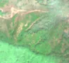
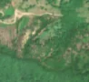

10,8 ha de pădure schimbată lângă Sadova Nouă
Între vara lui 2025 și 25 aprilie 2026, pe aproximativ 10,8 ha de pădure din comuna Slatina-Timiș, lângă Sadova Nouă, județul Caraș-Severin, imaginile Sentinel-2 arată că vegetația a dispărut sau s-a schimbat puternic. Nu pare o tăiere de lemn.
Autorizația de tăiere
nu e tăiere de pădure
Schimbarea nu pare tăiere de lemn, așa că autorizațiile de tăiere nu se aplică. Nu s-a schimbat nimic pe teren: e doar sezonul, norii sau lumina.
Ce se vede în poze: În poza «după» zona marcată arată în mare parte ca pădurea și pajiștea din jur, fără o porțiune goală nouă cu margini clare. Poza «înainte» este ceață și lumină diferită, deci diferența vine probabil din vreme și anotimp, nu dintr-o tăiere.


Înainte și după: Copernicus Sentinel-2, 10 m pe pixel, conturul zonei cu portocaliu. Poza detaliată (Esri World Imagery) e de acum 1–4 ani: arată ce era acolo înainte, nu tăierea.
Pe scurt
- Identificator
- 20260425_45264_22368
- Locul
- Sadova Nouă, comuna Slatina-Timiș, județul Caraș-Severin (SIRUTA 54056)
- Coordonate (centru)
- 45.26387, 22.36753 · Google Maps · OpenStreetMap
- Suprafața
- 10,8 ha (din pixeli de 10 m; ± câțiva pixeli pe margine)
- Pădurea întreagă
- în vara lui 2025 (de atunci, nori sau iarnă)
- Prima imagine cu schimbarea
- 25 aprilie 2026
- S-a lărgit
- 5 mai 2026
- Imagini în care se vede schimbarea
- 15
- Cât de sigur e semnalul din satelit
- scăzută
- Terenul
- în afara amenajamentelor silvice publicate (pășune, mal de apă sau pădure privată fără amenajament în registru)
- Garda Forestieră
- Timișoara
Dacă vrei să verifici sau să sesizezi
- Pădurile din județul Caraș-Severin sunt în grija Gărzii Forestiere Timișoara, care controlează tăierile și dă amenzile.
- Formularul Gărzii Forestiere Naționale primește sesizări și fără nume. Trimite linkul acestei pagini, coordonatele și pozele. Dacă tăierea e în desfășurare, sună la 112.
- Autorizațiile și transporturile de lemn se pot căuta în Inspectorul Pădurii.
Pagina arată ce se vede din satelit și ce scrie în registrul public; nu e o dovadă în sine.
Cum citezi zona
Linkul acestei pagini nu se schimbă. Dacă zona iese vreodată de pe hartă, pagina rămâne, cu data și cu ce știam despre ea.
Pădurea RO, zona 20260425_45264_22368: 10,8 ha, Sadova Nouă, comuna Slatina-Timiș, județul Caraș-Severin; schimbare văzută din satelit între vara lui 2025 și 25 aprilie 2026. https://iliemihai.github.io/padurea-ro/zona/20260425_45264_22368/ (consultat la [data]). Date: CC BY 4.0.
Datele zonei: GeoJSON · toate zonele: date deschise · licența CC BY 4.0.
Istoricul zonei pe hartă
Starea se poate schimba când registrul publică o autorizație sau când analistul vede poze mai bune. O ținem aici, ca un link citat să arate și ce spuneam atunci.
Pe hartă cel târziu din 5 noiembrie 2026.
- 5 noiembrie 2026 – azi · nu e tăiere de pădure
Detalii tehnice, pentru verificare
De ce acest nivel de încredere:
- văzută schimbată în 15 imagini diferite
- peste 3 ha
- ultima dată am văzut-o intactă în vara lui 2025 (de atunci, nori sau zăpadă)
- fără părerea AI
- în poze, zona se schimbă vizibil față de pădurea din jur
Ce a văzut analistul cu context: În imaginea Sentinel-2 din 30.04.2026 se văd ceață și tonuri palide, iar în cea din 29.06.2026 vegetația este verde uniform; petele deschise din stânga existau deja în poza detaliată din 2024 (pajiște cu arbori rari lângă drum). Nu apar margini ascuțite, depozite de crengi sau poteci de târâre noi, iar în imaginea largă nu se distinge nicio tăietură față de pădurea din jur; nu există nici autorizație în 5 km. Faptul că datele spun «pădure închisă» (80% coronament în 2000) nu e confirmat de poza detaliată, care arată un amestec de păduri și zone deschise.
- Placa Sentinel-2
- 34TFR
- NDVI de referință
- 0.87
- NBR de referință
- 0.58
- Scăderea în pădurea din jur
- 0.08
- Persistență
- 0.7
- NDVI / NBR după
- 0.579 / 0.296
- Analistul cu context (model)
- sezon_nori · 0.55
Cum se calculează fiecare: metodologia.
Pune harta zonei într-un articol
Copiază codul în articol (merge în majoritatea site-urilor de știri). Sau pune doar linkul: WhatsApp, Facebook și X arată singure poza zonei.